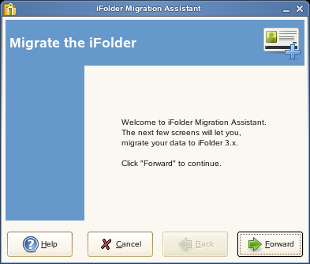
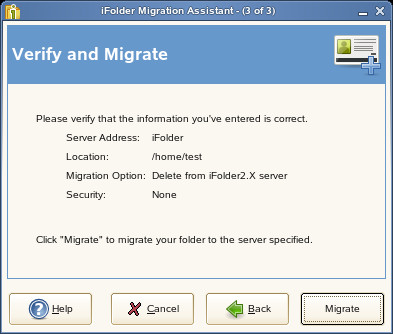

4.1 Migrating from iFolder 2.x to iFolder 3.6
This section discusses the following:
4.1.1 Understanding the Migration Process
Novell iFolder 3.6 provides a simple, hassle-free migration from iFolder 2.x to the iFolder client for Novell iFolder 3.6. The Migration Assistant provided in the iFolder 3.6 client helps you migrate the existing iFolder 2.x data to iFolder 3.6 quickly and easily.
During the startup, the Migration Assistant detects the 2.x installation and prompts you to migrate your data. During the data migration, it prompts you again to convert the existing folders or to make a copy of the 2.x iFolder. For more information on this, refer Step 6.
iFolder prompts you about the resynchronization of the files to 3.6 server, and asks whether you need to retain the 2.x client until the 3.6 completes synchronization. During this process, only the data get migrated, hence, the user has to set the preference in the new client.
4.1.2 Migration Procedure
-
Install the iFolder client for iFolder 3.6, then set up your account for the iFolder 3.6 enterprise server.
For information, see Managing iFolder Accounts and Preferences.
-
In the iFolder browser, create one or more iFolders on your local computer.
You can use any valid name for an iFolder. Do not create an iFolder in the same directory path as your current iFolder 2.x directory. For information, see Section 3.5, Creating and Uploading an iFolder.
-
The iFolder displays a message about the existence of previous version data, and request for a migration.
Click to open a list of avilable 2.x iFolders.
-
Select the 2.x iFolder you want to migrate.
Click to appear the Migration Assistant.
NOTE:You can also reach the Migration Assistant by .
Migration Assistant takes you through the Migration process to complete your data migration.
-
Clickto display the Migration options.
 -
Select one of the following:

: Select this option to disconnect the existing folder from the iFolder 2.x domain after migrating it to 3.6.
Select this option to create a copy of the iFolder 2.x files and convert it to the iFolder 3.6. This does not remove the files from the ifolder 2.x domain even after you migrate the files to the iFolder 3.6 domain.
If you select this option, you can also select if you want to copy not only the contents of the 2.x folder, but the parent folder as well. If you leave this option unselected, only the contents of the selected folder will be migrated to 3.6 domain.
Click to find the location to save the migrated folder.
For example, c:/Documents and Settings/<user name>/ifolder2dir is a 2.x iFolder and dir1 and dir2 are the directories under ifolder2dir. When you select the option , it create the ifolder2dir in the new location and the directories dir1 and dir2 are copied to it. If the option remains unselected, only the directories dir1 and dir2 are moved to the specified location.
-
Click to select the domain and Security Options as follows:
-
Select the domain from the drop-down list.
-
Select the desired security option:
- Select to
encrypt the selected iFolder.
If you did not set your passphrase during login, iFolder prompts you to enter the passphrase. You can skip this option and set the passphrase later.
If you are not currently connected to the iFolder domain, it prompts you to connect to the domain.
- Select to share the iFolder
with other members in the iFolder 3.6 domain.
When you attempt to migrate an encrypted 2.x iFolder to a shared one, it prompts you to verify the action.
IMPORTANT:You can not share your encrypted iFolders and the shared iFolders cannot be encrypted.
- Select to
encrypt the selected iFolder.
-
-
Click to verify and migrate the selected folder.
-
Verify that the information you have entered is correct, if necessary, click to return to previous pages to make corrections.
If the given information is correct, click to begin migration.
Click to go back and make any necessary changes.
-
Click to complete the migration.